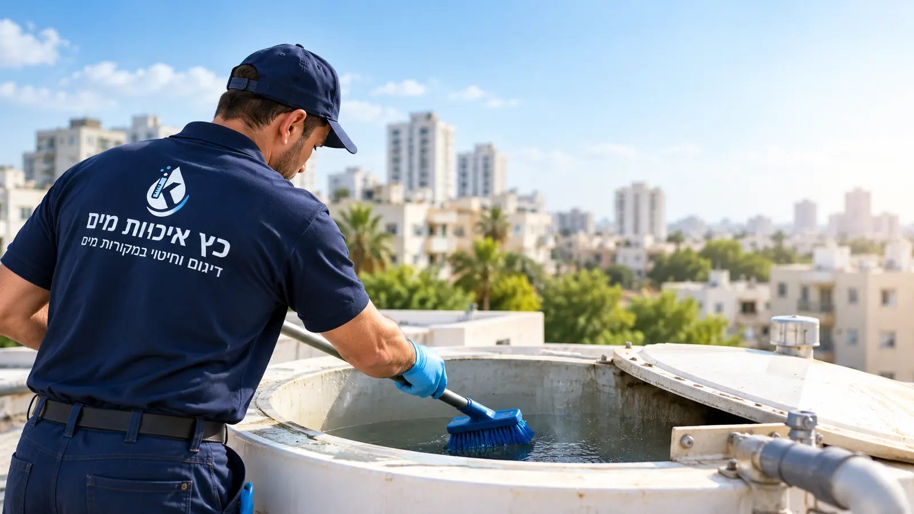

דיגום, ניקוי וחיטוי
מערכות מי שתייה.
בודקים, מחטאים ומתעדים.
ניקוי וחיטוי מאגרים לוועדי בתים, חיטוי קווי צנרת לטופס 4, דיגום מי שתייה במעבדה מוכרת ובדיקות מז"ח. הרצליה, השרון וגוש דן, ובכל הארץ בתיאום. בסיום: תעודה חתומה שעומדת מול תאגיד המים, הביטוח והביקורת.
בחרו מי אתם.
תראו מה החוק דורש ומה מומלץ.
חמישה סוגי לקוחות, חמישה מסלולים. בלי לקרוא את כל האתר.
מאגר המים הוא רכוש משותף באחריות הוועד. חוזר משרד הבריאות 22/2013 קובע ניקוי וחיטוי אחת לשנה בבנייני מגורים.
ספק אחד לכל הפורטפוליו: לוח שנתי, תעודות מסודרות לכל בניין והסכם מסגרת לכל הפורטפוליו.
תאגיד המים לא מחבר בניין חדש בלי תעודת חיטוי ודוח מעבדה. אנחנו עושים את שניהם ומתאמים מול התאגיד.
מלונות, בתי אבות, בתי חולים ומוסדות חינוך נבדקים על ידי משרד הבריאות. תיעוד מסודר הוא ההגנה שלכם.
מאגר פרטי, באר, מערכת סינון או טעם מוזר במים? בודקים במעבדה לפני שמנחשים.
ארבע בדיקות וטיפולים.
מערכת מים אחת בטוחה.
כל שירות עומד בפני עצמו, ומשתלב עם האחרים בביקור אחד.
ניקוי וחיטוי מאגרי מים
ריקון, ניקוי מכני, חיטוי בריכוז מבוקר ותיעוד מלא לפי חוזר משרד הבריאות 22/2013.
לפרטים ומחירדיגום מי שתייה
דוגם מוסמך, בקבוקים סטריליים, מעבדה מוסמכת. מיקרוביולוגיה, מתכות, כימיה וליגיונלה.
לפרטים ומחירחיטוי קווי צנרת
שטיפה, הכלרה בריכוז ובזמן מגע לפי הנוהל, דיגום אימות ותעודת חיטוי. הדרך הקצרה לטופס 4.
לפרטים ומחירבדיקת מז"ח
בדיקה שנתית למונע זרימה חוזרת במכשור מכויל, תעודת בדיקה חתומה ודיווח לתאגיד המים.
לפרטים ומחירחברת איכות מים.
לא חברת הדברה שמנקה גם מאגרים.
רוב מי שמציע ניקוי מאגרים מגיע מעולם ההדברה, הביוב או המשאבות. אנחנו מגיעים מעולם הדיגום והמעבדה.
מוסמכים, לא "מנוסים"
הסמכה של משרד הבריאות לניקוי וחיטוי מערכות מי שתייה, ודוגמי מים מוסמכים. לא רישיון מדביר.
מעבדה מוסמכת, לא "בדיקה במקום"
דגימות סטריליות בשרשרת קירור למעבדה מוסמכת ISO 17025. דוח שמתקבל בכל ביקורת.
תיעוד שמחזיק מים
תעודה חתומה, תווית על המתקן, תמונות וממצאים. הכל ב-PDF אחד לתיק הבניין או המוסד.
אותו צוות, מהבית החולים לבניין שלכם
עובדים עם תאגידי מים, עיריות, בתי חולים ומלונות מאז 1986. הסטנדרט הזה מגיע גם לוועד הבית.
אתם מזהים את עצמכם?
הבניין צריך תעודה. אתם צריכים שקט.
מים חומים אחרי הפסקת מים, תלונה בקבוצת הבניין או חידוש ביטוח. אנחנו מגיעים, מנקים, מתעדים ושולחים הודעה מוכנה לדיירים.
- ניקוי וחיטוי מאגר אחת לשנה
- דיגום מעבדה כשיש תלונות
- בדיקת מז"ח למערכות הבניין
ספק אחד. לוח שנה אחד. תיקייה אחת.
אנחנו מזכירים, מתזמנים ומבצעים בכל הבניינים שלכם. תעודות לכל בניין במייל, והסכם מסגרת לכל הפורטפוליו.
- תוכנית שנתית לכל הפורטפוליו
- דיווח מז"ח לתאגידים
- תיק מסמכים דיגיטלי
לא מעכבים טופס 4.
חיטוי קווים ומאגר, דיגום מהיר במעבדה מוסמכת ותיאום ישיר מול תאגיד המים. תעודה ודוח מעבדה תוך ימים ספורים.
- חיטוי קווי צנרת ומאגרים
- דיגום לאישור מים
- בדיקת מז"ח למערכת הכיבוי
עומדים בביקורת. בלי להשבית את המוסד.
תוכנית דיגום לפי ההנחיות הייעודיות למוסד שלכם, כולל ליגיונלה, חיטוי מאגרים ודודים ובדיקות מז"ח. בשעות שנוחות לכם.
- דיגום תקופתי וליגיונלה
- ניקוי מאגרים ללא השבתה
- תיעוד לביקורת משרד הבריאות
בדיקה שנתית, בשקט, בחופש הגדול.
מעונות, בתי ספר ומבני ציבור. דיגום, חיטוי ובדיקות מז"ח במועדים שלא מפריעים לפעילות, עם דיווח מסודר לרשות.
- דיגום מים שנתי
- בדיקות מז"ח לגינון ולכיבוי
- חיטוי אחרי השבתה בחופשות
מים מבאר, ממאגר או עם טעם מוזר?
בודקים במעבדה לפני שמחליפים פילטרים. מנקים מאגרים פרטיים מ-15 מ"ק, ומחטאים צנרת בבית חדש או משופץ.
- דיגום מיקרוביולוגיה ומתכות
- ניקוי מאגר פרטי
- חיטוי צנרת
בלי להמציא דרישות.
רק מה שכתוב.
בשוק הזה מרבים לצטט "תקנות" לא מדויקות. אלו המקורות האמיתיים, עם קישור.
| מתקן | מי אחראי | מה נדרש | המקור |
|---|---|---|---|
| מאגר מים בבניין מגורים | ועד הבית / חברת הניהול | ניקוי וחיטוי אחת לשנהבידי מי שעבר הדרכה שאישר משרד הבריאות, עם תווית ותיעוד | חוזר משרד הבריאות 22/2013, סעיף 2.1.1.3 |
| מונע זרימה חוזרת (מז"ח) | בעל העסק / הנכס שבו מותקן | בדיקה אחת לשנה לפחות בידי מתקין מז"ח מוסמךרישום ביומן ותעודת בדיקה לתאגיד המים | תקנות בריאות העם (התקנת מכשיר מונע זרימה חוזרת), התשנ"ב-1992 |
| קווי מים חדשים (טופס 4) | הקבלן / היזם | חיטוי ודיגום לפני חיבור לרשתתעודת חיטוי ודוח מעבדה לתאגיד המים | חוזר 22/2013 ותקנות מי השתייה 2013 |
| מי שתייה במוסדות | הנהלת המוסד | דיגום תקופתי לפי סוג המוסדמלונות, בתי אבות, מוסדות רפואה וחינוך, כולל ליגיונלה | הנחיות משרד הבריאות למוסדות, תקנות מי השתייה, התשע"ג-2013 |
שלוש פעולות מצדכם. את השאר אנחנו עושים.
שולחים פרטים
כתובת, סוג הנכס ומה צריך. אם לא בטוחים, שולחים תמונה בוואטסאפ. חוזרים אליכם עם הצעה מסודרת ותאריך.
מתאמים שעה שקטה
אנחנו מגיעים עם ציוד מכויל, חומרים מאושרים למי שתייה ובקבוקי דיגום סטריליים. העבודה מתועדת בתמונות.
מקבלים תיק מסודר
תעודה חתומה, דוח מעבדה כשרלוונטי, תמונות וממצאים ב-PDF אחד. ותזכורת מאיתנו לפני המועד הבא.
40 שנה שאנחנו מטפלים במים שאנשים שותים.
כץ איכויות מים עובדת עם תאגידי מים, עיריות, בתי חולים, מלונות ובתי אבות. אותו צוות, אותו סטנדרט, גם לבניין שלכם.
אתם חברת הדברה?
באילו אזורים אתם עובדים?
מה צריך כדי לקבל הצעת מחיר?
מה מקבלים בסיום העבודה?
אפשר לשלב כמה שירותים בביקור אחד?
הדיגום נעשה "במקום" או במעבדה?
כץ איכויות מים בע"מ.
הרצליה, משנת 1986.
התחלנו בדיגום מים לתאגידים ולרשויות, והתמחות הזאת נשארה הליבה שלנו: מודדים לפני שמטפלים, ומתעדים אחרי. היום אנחנו נותנים לוועדי בתים, לחברות ניהול, למוסדות ולקבלנים את אותו הסטנדרט שרשויות דורשות מאיתנו.
צוות החברה מוסמך על ידי משרד הבריאות לניקוי וחיטוי מערכות מי שתייה, הדוגמים שלנו מוסמכים, והבדיקות נעשות במעבדות מוסמכות בלבד.
סוקולוב 10, הרצליה · ניווט ב-Waze
09-955-2072
שליחת הודעה
מוסמכי משרד הבריאות לניקוי וחיטוי מערכות מי שתייה · דוגמי מים מוסמכים

שלחו פרטים. תקבלו הצעה ותאריך.
ספרו לנו על הנכס ומה נדרש. אם לא בטוחים, זה בסדר, נכוון אתכם. הצעה ללא התחייבות.
קיבלנו, תודה!
נחזור אליכם בהקדם בשעות העבודה. רוצים לזרז? כתבו לנו בוואטסאפ.